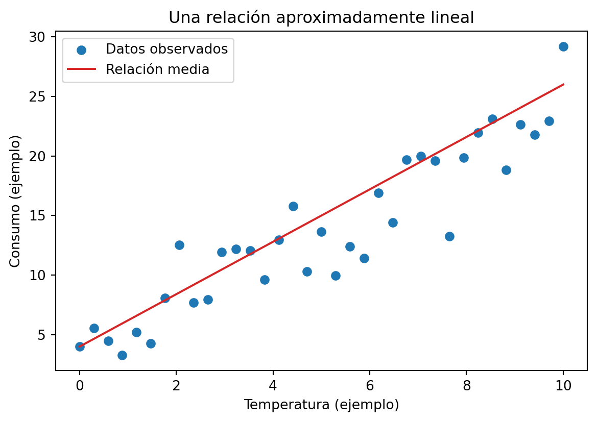
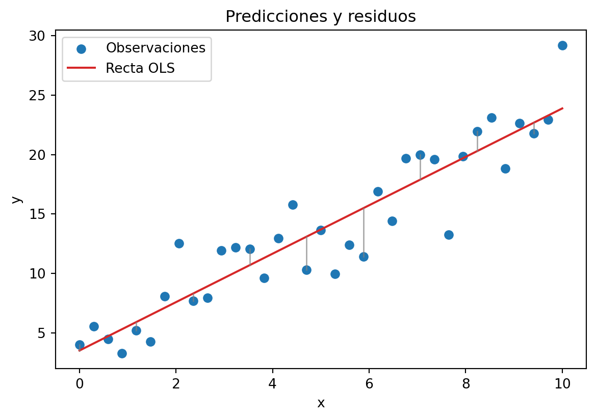
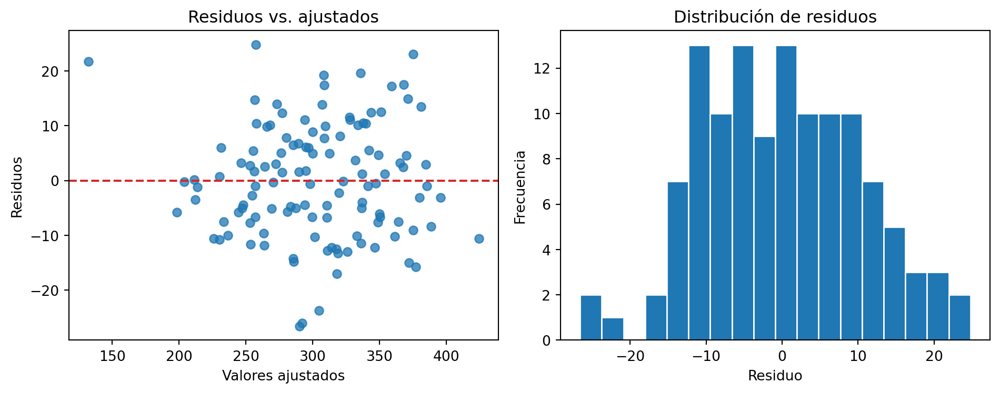
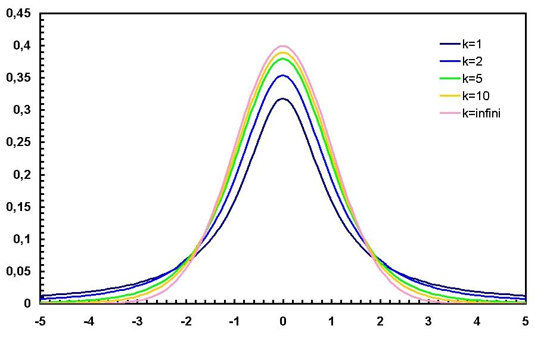

Aprendizaje supervisado — día 2
2026-11-26
Hasta ahora hemos estudiado métodos no supervisados:
Ahora empezamos con aprendizaje supervisado:
Pregunta guía: ¿qué significa decir que una variable está asociada linealmente con otra?
Imaginemos que queremos predecir el consumo eléctrico de una casa usando su temperatura exterior.
El objetivo es encontrar una regla que aproxime la relación entre temperatura y consumo.
La palabra supervisado significa que, durante el entrenamiento, conocemos tanto los predictores como las respuestas observadas.
El modelo lineal simple se escribe:
\[ \boxed{y_i=\beta_0+\beta_1x_i+\varepsilon_i} \]
donde:
La respuesta media condicionada a \(x_i\) se modela como
\[ \mathbb{E}[Y_i\mid X_i=x_i]=\beta_0+\beta_1x_i. \]
Importante: los puntos observados no tienen que caer exactamente sobre la recta. El modelo describe una tendencia media y admite variabilidad alrededor de ella.
La recta representa la respuesta predicha; las distancias verticales entre observaciones y recta son los residuos.

Para cada observación, la predicción es
\[ \hat{y}_i=\hat{\beta}_0+\hat{\beta}_1x_i. \]
El residuo es la diferencia entre lo observado y lo predicho:
\[ e_i=y_i-\hat{y}_i. \]
Mínimos cuadrados elige los coeficientes que minimizan la suma de residuos al cuadrado:
\[ \boxed{ \min_{\beta_0,\beta_1} \sum_{i=1}^{n} (y_i-\beta_0-\beta_1x_i)^2 } \]
Si la variación de \(x\) no es cero, las estimaciones OLS son
\[ \hat{\beta}_1= \frac{\sum_i(x_i-\bar{x})(y_i-\bar{y})} {\sum_i(x_i-\bar{x})^2}, \qquad \hat{\beta}_0=\bar{y}-\hat{\beta}_1\bar{x}. \]
La pendiente también puede escribirse como
\[ \hat{\beta}_1=\frac{\operatorname{Cov}(X,Y)} {\operatorname{Var}(X)} \]
usando la misma convención de divisor en covarianza y varianza.
Esto conecta regresión lineal con conceptos que ya vimos: media, varianza y covarianza.
# Ajuste OLS con fórmulas explícitas
x_bar = x.mean()
y_bar = y.mean()
beta1_hat = np.sum((x - x_bar)*(y - y_bar)) / np.sum((x - x_bar)**2)
beta0_hat = y_bar - beta1_hat*x_bar
y_hat = beta0_hat + beta1_hat*x
residuals = y - y_hat
print(f"Intercepto estimado: {beta0_hat:.3f}")
print(f"Pendiente estimada: {beta1_hat:.3f}")
print(f"Primeros residuos: {np.round(residuals[:5], 2)}")Intercepto estimado: 3.513
Pendiente estimada: 2.038
Primeros residuos: [ 0.49 1.43 -0.24 -2.04 -0.69]
En muchos problemas, una respuesta depende de más de un predictor.
Por ejemplo, el precio de una vivienda puede estar asociado con:
El modelo lineal múltiple es
\[ \boxed{ y_i=\beta_0+\beta_1x_{i1}+\cdots+\beta_px_{ip}+\varepsilon_i } \]
Hay una respuesta \(y\) y \(p\) variables explicativas.
En el modelo
\[ \mathbb{E}[Y\mid X_1,\ldots,X_p] =\beta_0+\beta_1X_1+\cdots+\beta_pX_p, \]
el coeficiente \(\beta_j\) representa el cambio esperado en \(Y\) asociado con aumentar \(X_j\) una unidad, manteniendo constantes los demás predictores.
La regresión múltiple se expresa de forma compacta:
\[ \boxed{\mathbf{y}=\mathbf{X}\boldsymbol{\beta}+\boldsymbol{\varepsilon}} \]
Con intercepto, la primera columna de \(\mathbf{X}\) es un vector de unos.
Dimensiones:
El objetivo es minimizar encontrar
\[ \mathbf{y}^* = \mathrm{argmin}_{\mathbf{y}}\|\mathbf{y}-\mathbf{X}\boldsymbol{\beta}\|_2^2. \]
Si las columnas de \(\mathbf{X}\) son linealmente independientes, la solución es
\[ \boxed{ \hat{\boldsymbol{\beta}} =(\mathbf{X}^T\mathbf{X})^{-1}\mathbf{X}^T\mathbf{y}. } \]
La matriz \(\mathbf{X}^T\mathbf{X}\) debe ser invertible para usar esta expresión.
En la práctica, es preferible resolver el problema con métodos numéricos estables (como SVD) en vez de calcular explícitamente la inversa.
rng = np.random.default_rng(21)
n = 120
area = rng.normal(100, 20, n) # metros cuadrados
age = rng.uniform(0, 40, n) # años
noise = rng.normal(0, 12, n)
price = 35 + 2.8*area - 0.7*age + noise
X = np.column_stack([area, age])
X_design = np.column_stack([np.ones(n), X])
beta_hat, *_ = np.linalg.lstsq(X_design, price, rcond=None)
price_hat = X_design @ beta_hat
print("Coeficientes [intercepto, área, antigüedad]:")
print(np.round(beta_hat, 3))Coeficientes [intercepto, área, antigüedad]:
[43.944 2.717 -0.682]En este ejemplo, los coeficientes se interpretan en las unidades que definimos para precio, área y antigüedad.
Definimos la suma total de cuadrados:
\[ \mathrm{SST}=\sum_i(y_i-\bar{y})^2 = \mathrm{SSR}+\mathrm{SSE}, \]
Minimos cuadrados descompone la variabilidad, donde \(\mathrm{SSR}=\sum_i(\hat{y}_i-\bar{y})^2\) es la suma de cuadrados explicada y \(\mathrm{SSE}=\sum_i(y_i-\hat{y}_i)^2\) es la suma de cuadrados residual.
Una medida habitual del ajuste es
\[ \boxed{ R^2=1-\frac{\mathrm{SSE}}{\mathrm{SST}}. } \]
\(R^2\) mide la fracción de la variabilidad observada de \(y\) que queda explicada por las predicciones del modelo en esos datos (En el caso particular de una regresión lineal, R2 coincide con el cuadrado del coeficiente de correlación de Pearson).
R² en los datos de entrenamiento: 0.959
RMSE: 10.367
MAE: 8.457Al agregar predictores, el \(R^2\) de entrenamiento nunca disminuye, incluso si la nueva variable aporta muy poco.
El \(R^2\) ajustado penaliza el número de predictores:
\[ \boxed{ R^2_{\mathrm{aj}} =1-(1-R^2)\frac{n-1}{n-p-1} } \]
donde \(n\) es el número de observaciones y \(p\) el número de predictores (sin contar el intercepto).
No reemplaza la evaluación en datos de prueba, pero ayuda a comparar modelos con distinto número de variables.
Para evaluar predicción, no debemos medir únicamente sobre los datos usados para ajustar el modelo.
Intercepto: 43.514
Coeficientes: [ 2.722 -0.622]
R² prueba: 0.914
RMSE prueba: 12.42
MAE prueba: 10.515Hasta ahora usamos regresión para estimar y predecir. La estadística también permite cuantificar incertidumbre.
Bajo ciertos supuestos, podemos estudiar:
Por ejemplo, para un predictor \(X_j\) podemos plantear:
\[ H_0:\beta_j=0 \qquad\text{vs.}\qquad H_1:\beta_j\neq 0. \]
La pregunta es si los datos aportan evidencia de una asociación lineal parcial distinta de cero, bajo el modelo y sus supuestos.
Para la interpretación e inferencia clásica de minimos cuadrados, suelen considerarse:
La normalidad de los errores es un supuesto adicional usado para la inferencia exacta en muestras pequeñas..
Los residuos ayudan a detectar patrones que el modelo no está capturando.

Idealmente, el gráfico de residuos no muestra patrones sistemáticos ni cambios evidentes en su dispersión. Un histograma ayuda a inspeccionar la forma de la distribución, pero no prueba normalidad.
Si \(\mathbf{SE}_k\) es la desviación estandar del valor estimado para \(\beta_k\), entonces \((\hat{\beta}-\beta_0) / (\mathbf{SE}_k)\) sigue la distribución de t Student con n-2 grados de libertad.

Aprendizaje supervisado | día 2